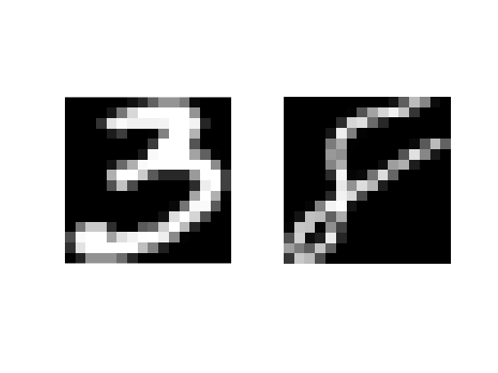

Contents
load("usps_all.mat");
usps_train_class1 = double(data(:,1:1000,3)')./255;
usps_train_class2 = double(data(:,1:1000,8)')./255;
usps_test_class1 = double(data(:,1001:end,3)')./255;
usps_test_class2 = double(data(:,1001:end,8)')./255;
usps_train = cat(1, usps_train_class1, usps_train_class2)';
usps_test = cat(1, usps_test_class1, usps_test_class2)';
SOLUTION 2: Draw test(:, 2) and train (:, 1002) using imshow
figure;
subplot(1,2,2);
class2_digit = usps_train(:, 1002);
imshow(reshape(class2_digit, [16 16]));
subplot(1,2,1);
class1_digit = usps_test(:, 2);
imshow(reshape(class1_digit, [16 16]));

SOLUTION 3: Hard SVM
samples_count = 1100;
class1_labels = zeros(samples_count, 1);
class2_labels = ones(samples_count, 1);
train_labels = cat(1, class1_labels(1:1000), class2_labels(1:1000));
test_labels = cat(1, class1_labels(1001:end), class2_labels(1001:end));
svm_model = fitcsvm(usps_train', train_labels, 'Standardize',true,'KernelFunction','linear','KernelScale','auto','BoxConstraint', Inf);
svm_model = fitPosterior(svm_model, usps_train',train_labels);
[labels, posterior] = predict(svm_model, usps_test');
mislabeled = sum(labels ~= test_labels);
disp(['Mislabeled Points: ', num2str(mislabeled)]);
accuracy = sum(labels == test_labels) / length(test_labels) * 100;
disp(['Accuracy: ', num2str(accuracy), '%']);
Warning: Classes are perfectly separated. The optimal score-to-posterior
transformation is a step function.
Mislabeled Points: 9
Accuracy: 95.5%